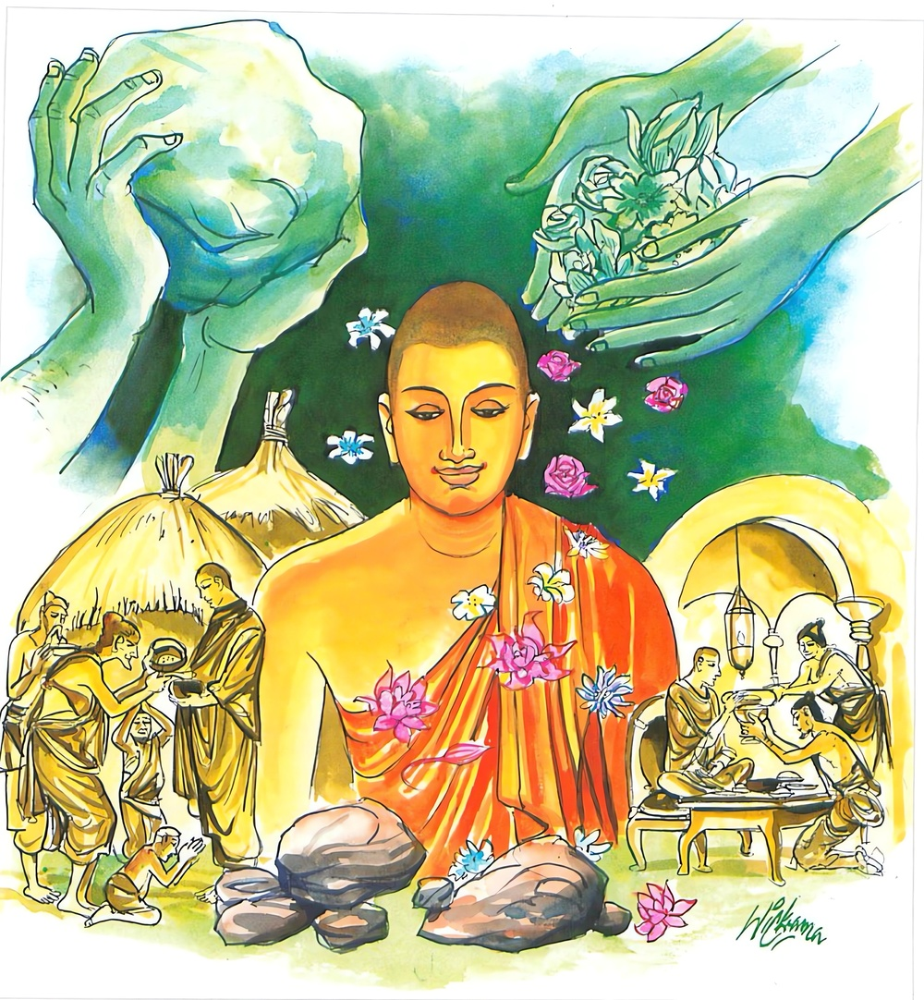

6-8 මිදිරොඩුදිය බුන් කොටලුවෝ
මෙම කතාව ධම්මපද අටුවාවෙන් ද කියවන්න.
සබ්බත්ථ වෙ සප්පුරිසා චජන්ති න කාමකාමා ලපයන්ති සන්තො
සුඛෙන ඵුට්ඨා අථ වා දුඛෙන නොච්චාවචං පණ්ඩිතා දස්සයන්ති.
බුද්ධාදී උත්තම පුරුෂයෝ ස්කන්ධාදි සියලු ධර්මයෙහි පවත්නා ඡන්දරාගය දුරු කෙරෙති. ඒ සත්පුරුෂයෝ වස්තුකාමයන් කැමැති ව, සිත් ගන්නා තෙපුල් නො පවසති. සුවයෙන් පහස්නා ලද නොහොත් දුකින් පහස්නා ලද නුවණැත්තෝ උස් පහත් ගති නො දක්වත්.

බුදුබවට පැමිණි දා සිට, ඉදිරියෙහි අවුරුදු විස්සක් පමණ කාලය ප්රථමබොධි ය යි ගන්නා බැවින්, ඒ අවුරුදු විස්ස තුළ එක් අවස්ථාවෙක භාග්යවත් බුදුරජානන් වහන්සේ පන්සියයක් භික්ෂූන් සමග වෙරඤ්ජාවට වැඩ වෙරඤ්ජ නම් බ්රාහ්මණයාගේ ආරාධනාවෙන් එහි ම වස් විසූහ. වෙරඤ්ජ තෙමේ මාරාවෙශයෙන් සිහි මුළා බවට පැමිණියේ, එක් දවසකුදු බුදුරජුන්ගේ ගුණ සිහි නො කෙළේ ය. බුදුරජානන් වහන්සේ ඔහුට අමතක වූහ. වෙරඤ්ජාව ද කෑම් බීම්වලින් දුක් පත් විය. භික්ෂූන් වහන්සේලා වෙරඤ්ජාවෙහි හා ඉන් පිටත පිඬු සිඟා ගියෝ ද කෑම්බීම් කිසිත් නො ලැබ එයින් වෙහෙසට පත් වූහ. පිඬු සිඟා ගිය උන්වහන්සේලාට අසුන් වෙළඳාමට එහි ඇවිත් සිටි වෙළෙන්දෝ, එක් නමට එක් දවසට යවහාල් නැළිය බැගින් දින පතා යවහාල් නැළි පන්සියය, පන්සියය දෙන්නට නියම කර ගත්හ. ඒ වළඳාත් වෙහෙසට පත් භික්ෂූන් දැක මෞද්ගල්යායන මහාස්ථවිරයන් වහන්සේ පොළෝ පත්ලෙහි වූ රස ඕජා ඔවුනට වළඳවනු කැමැති වූහ. තමන්ගේ අනුභාවයෙන් සියලු භික්ෂූන් පිඬු පිණිස උතුරුකුරුදිවයිනට ගෙණ යන්නට අදහස් කළහ. බුදුරජානන් වහන්සේ ඒ සියල්ල වළකා ලූහ. භික්ෂූන් වහන්සේ රස තෘෂ්ණාව බැහැර කොට විසූ බැවින්, ඔවුනට ආහාර පානයෙන් එක් දවසකුදු චිත්තපීඩාවක් නො ද වූ ය. ඒ තෙමස එහි වැඩ වසා, වස් නිම කළ බුදුරජානන් වහන්සේ බමුණා වෙතට වැඩි සේක්, එහිදී ඔහු කළ සත්කාර සම්මාන ඇති ව ඔහු ශරණශීලයෙහි පිහිටුවා වෙරඤ්ජාවෙන් නික්ම පිළිවෙළින් චාරිකා කරණ සේක්, සැවැත් නුවරට වැඩ ජෙතවනමහාවිහාරයෙහි වැඩ විසූහ. එ නුවර වැස්සෝ උන්වහන්සේට දන් පිළිගැන්නූහ.
එ දවස හිඟන්නන් පන්සියයක් එහි වාසය කෙළේ ය. ඔවුහු හැම දෙන භික්ෂූන් වළඳා ඉතිරි වූ රසැති ආහාර පාන කා බී නිදා හිඳ නැඟිට ගං තොටට ගොස් කෑ කෝ ගසමින් ඒ ඒ තැන නටමින් සෙල්ලම් කරමින් ගුස්ති අල්ලමින් විහාරය තුළ හා ඉන් පිටතත් නො පණත් කම් කරමින් කල් ගෙවති. භික්ෂුන් වහන්සේලා ධර්මශාලාවට රැස්ව ‘බලන්න! ඇවැත්නි! මේ හිඟන්නෝ කෑමට දෙයක් නැති අවදියේ වෙරඤ්ජාවෙහිදී මේ එක ම නො පණත් කමකුදු නො කොළෝ ය, දැන් රසමසින් යුත් කෑම් බීම් කොට නොයෙක් අන්දමේ විකාර කරමින් හැසිරෙති, භික්ෂූන් වහන්සේ වනාහි කෑම් බීම නැති වෙරඤ්ජාවෙහිදී ද උපශාන්තව හුන්හ, දැන් එයටත් වඩා හොඳින් ශාන්තව හිඳිති’ යි කතා කරමින් ඉන්ද දී එහි වැඩි බුදුරජානන් වහන්සේ ‘මහණෙනි! තමුසේලා කියන්නහු කුමක් දැ’ යි අසා ‘මෙ නම් කතාවකැ’ යි දැන් වූ කල්හි ‘ඔය හොඳට කා බී පෙරළි කරණ හිඟන්නෝ, පෙර එක් අත්බවෙක කොටලුවෝ ව උපන්හ, දිනක් මේ කොටලුවෝ මිරිකා, රස ගෙණ අසුන්ට පොවා වීසි කළ මිදිරොඩු ගෙණ නැවැත දිය වක් කොට මිරිකා නියඳ වැහැරියෙන් පෙරා ගත් වාලෝදක නම් කිසිත් මිදි රසක් නැති ලාමක වූ මිදිරොඩු සේදූ වතුර බී, මත් වූ බඹරුන් සේ කෑ කෝ ගසමින් හැසිරෙන්නට වූහයි වදාරා
“නියඳ පෙරහණ ලා - පෙරූ මිදි රොඩු රසසුන්,
දිය බී කොටලුවන්හට - මද උපදීය නිදි ලත්,
මිදි පල මැඩ පෙරා - ගත් මේ පිණී මිදිරස,
බීමෙන් අසුන්හට - මද නො ද, උපදි කිසි විට,
.
දනිඳුනි! දුදැයෙන් - නැත, මඳ රසින් පැහැයූ,
මදරසැති මිදිරොඩු - දිය බී කොටලු මත් වේ.
උතුම් දෑ ඇති ඒ - බර ඉසිලුමෙහි යුහුසුලු,
දෑ අසු අග මිදිරස - බීලා ද මත් නොම වේ”
යි වාලොදකජාතකය වදාළ සේක. නැවැත ‘සත්පුරුෂයෝ ලෝභය දුරු කොට සැපවත් කාලයෙහි ද දුක්පත් කාලයෙහි ද විකාර නො කොට එක සේ වාසය කරති’ යි අනුසන්ධි ගළපා මේ ධර්මදේශනාව කළ සේක:-
සබ්බත්ථ වෙ සප්පුරිසා චජන්ති
න කාමකාම ලපයන්ති සන්තො,
සුඛන ඵුට්ඨා අථවා දුඛෙන
නොච්චාවචං පණ්ඩිතා දස්සයන්තීති.
සත්පුරුෂයෝ එකැතින් (ඡන්ද රාගය) දුරු කරති. සත්පුරුෂයෝ කාමයන් කැමැති ව කතා නො කෙරෙති. සුවයෙන් පහස්නා ලද්දාහු, නොහොත්, දුකින් පහස්නා ලද්දාහු ද නුවණැත්තෝ උස් පහත් ගති නො දක්වන්නෝ ය.
සබ්බත්ථ වෙ සප්පුරිපුසා චජන්ති = සත්පුරුෂයෝ සියලු තන්හි (ඡන්ද රාගය) දුරු කරති.
ස්කන්ධ, ධාතු, ආයතනා දී භේද වූ සියලු ධර්මයෝ සබ්බත්ථ, යන්නෙන් කිය වෙති. ‘ සබ්බත්ථාති පඤ්චක්ඛන්ධාදි භෙදෙසු සබ්බධම්මෙසු’ යනු අටුවා ය. ‘සත් පුරුෂයෝ කුමක් හරිත් දැ’ යි
මෙහි ප්රශ්නයක් නැගිය හැකි ය. එයට පිළිතුර ‘සත් පුරුෂයෝ ඡන්දරාගය හරිත්’ යනුයි. ඡන්දරාගය නම්, කාමවස්තූන් කෙරෙහි පැවැති බලගතු ඇල්ම යි. කාමවස්තු විෂයකොට පැවැති ඇල්ම දුර්වල වේ නම්, ඒ දුර්වල වූ ඇල්ම ඡන්ද, යි ද, බලගතු ඇල්ම රාග, යි ද කියත්. රූපශබ්දාදීන් විෂයෙහි පවත්නා ස්නේහය ඡන්දරාගැ යි තවත් තැනෙක පෙණේ. ‘ඡන්දරාගො ති රූපසද්දාදිසු සිනහො’ යනු එහි විවරණය යි. [1] ඡන්දරාගය දුරුකිරීම අර්හත්මාර්ගඥානයෙන් කළ යුතු ය. බුද්ධාදිසත්පුරුෂයෝ අර්හත්මාර්ගඥානයෙන් ඡන්දරාගය දුරු කරති.
න කාමකාමා ලපයන්ති සන්තො = සත්පුරුෂයෝ කාමයන් කැමැති ව කතා නො කරති.
සන්තො, යනු කියන ලදී. කාමවිස්තරය ද කියවින. අදහස මෙසේ ය:- බුද්ධාදිසත්පුරුෂයෝ කාමවස්තූන් ලබනු කැමැති ව හෙවත් සිවුරු, කෑම්, බීම්, වෙහෙර, පන්සල්, ඇඳ පුටු කොට්ට මෙට්ට පාන් පඩික්කම් ඇඳ ඇතිරිලි රෙදිපිළි තුවා ලේන්සු සබන් හුණු ගිලන්පස ආදි කිසිවක් ලබා ගන්නා අදහසින් වචනයකුදු නො කියති. අනුන් ලවාත් නො කියවති. එහෙත් මේ ඈ හැම දෙයක් ම ලබා ගැණීමේ ආශා ඇත්තෝ, දායකගෙවලට ගොස් ’සුව පහසු කෙසේ ද? ධර්මපාල පාඨශාලාවට යනවා ද? ඔහු කීවන පංක්තියේ ද? චන්ද්රා! විනීතා! කොහොම ද පාඨශාලාවේ වැඩ? මොක ද ඊයේ පෙරේදා පන්සලට නො ආවහු? මේ දවස්හි පන්සලේ ද නොයෙක් වැඩ, මිල මුදලුත් හිග යි, මටත් විවේකයෙක් නැහැ, නිතර ම වාගේ සභාරැස්වීම්වලට, බණවලට යන්නට සිදු වෙනවා’ යනාදි ලෙසින් මිනිසුන්ගේ සිත් තමා වෙත නැමී එන්නට කතා කරති. මහත්මයා ගෙයි නැති විටක ගියෝ නම්, ‘මහත්මයා ගියේ කොහි ද? කවදා ද එන්නේ? පුංචිමහත්මයා මෙහි එන්න’ යනාදි ලෙසින් කතා කරති. නෝනා මහත්මයා නැති විටක ගියෝ නම්, ‘වාඩි වෙන්න, පුටුවක් ගෙණ, කෝ ලමයි? පියදාස බොහෝ දවසකින් දකින්නට ලැබුනේ නැහැ, ජිනදාස පුංචිමහත්මයා දවසක් පන්සලට ගිය නමුත් කතා කරන්නට ඉඩ ලැබුනේ නැත, ධර්මරත්න පෙරකදෝරු මහත්මයා ඇවිත් සිටියා, කෝ නෝනා මහත්මයා දකින්නට නැත්තේ?’ යනාදි ලෙසින් උනුන්ගේ සිත් ගැණුමට මායී ව කතා කරති. එසේ ම ගුරුවරයා ගෝලයාගේ ඇති නැති ගුණ කියා දායකයන් කෙරෙහි ගෝලයා හිතවත් ය යනාදීන් දක්වා ලාභ උපදවති. ගෝලයා ද ගුරුවරයාගේ ඇති නැති ගුණ කියා සිවුපසය උපදවති.
ලාභාශාවෙන් මැඩුනවුන්ගේ මේ කීම් බස් වලින් පැහැදුනු මුග්ධ වූ දායකදායිකාවෝ ‘ඒ හාමුදුරුවෝ කො තරම් හොඳ ද, අපේ හැම සැප දුකක් ම සොයති, අපේ ලමයින්ට බොහෝ ආදරය කරති, පිරිත මතක් කළා ම ඇත, පිරිත් කියන්නට අසා එති, අපේ පන්සලේ හාමුදුරුවරු අප ගැණ කිසිත් නො සොයති, අප ගෙට නො එති, පාර තොටේ දී හමුවූ විට ද කතා නො කරති, මේ හාමුදුරුවෝ එසේ නො වෙති, කො තැනක දී හමුවුනත් කතා කරති, කතා නො කොට නො යති’ යනාදිය කියමින් සිතමින් පැහැද ‘ඔව්! ස්වාමීනි! අපට මේ දවස්වල වැඩි කරදරයක් නැත, පන්සලේ මේ දවස්වල ගොඩ නගා ගෙණ යන දාන ශාලාවට මුදල් ටිකක් අපිත් එවන්නෙමු, මල් අසුනක් බැන්දවීමට මගේ ද අදහසක් තිබේ, ඉඩ ලැබුනු විටක මම ඊට මුදල් එවන්නෙමි, හාමුදුරුවන් වහන්සේ එය බඳවන්න! එයට යන වියදම මම දෙන්නම්’ යනාදිය කියා බත බුලතින් ද සංග්රහ කොට යවති. මේ හේතුවෙන් මේ ගිහි පැවිද්දෝ මරණින් මතු අපායයෙහි උපදිත්. දෙපසෙහි ම කීම් කෙරුම් බැලුම් සැලකුම් නො දැහැමි බැවිනි. සසුන් පිළිවෙතට පටහැති බැවිනි. මහණකමට නො ගැළපෙන බැවිනි.
“බුද්ධාදයො සන්තො කාමහෙතු නෙ ව අත්තනා ලපයන්ති, න පරං ලපාපෙන්ති, යෙ හි භික්ඛාය පවිට්ඨා ඉච්ඡාචාරෙ ඨිතා, කිං උපාසක! සුඛං තෙ පුත්තදාරස්ස රාජචොරාදීනං වසෙන ද්විපදචතුප්පදෙසු නත්ථි කොචි උපද්දවො ති ආදීනි වදන්තා තාව තෙ ලපන්ති නාම, තථා පන වත්වා ආම භන්තෙ! සබ්බෙසං නො සුඛං නත්ථි කොචි උපද්දවො, ඉදානි නො ගෙහං පහුත අන්නපානං ඉධෙ ව වසථා ති අත්තානං නිමන්තාපෙන්තා ලපාපෙන්ති නාම, සන්තො පන ඉදං උභයම්පි න කරොන්ති” යනු අටුවාය.
සුබෙන ඵුට්ඨා අථවා දුඛෙන - සුවයෙන් පහස්නා ලද්දාහු නොහොත්, දුකින් පවත්නා ලද්දාහු ද.
මෙහි සුඛ, දුක්ඛ ගෙණ දෙසීම දේශනාමාත්රයෙකි. අෂ්ට ලෝක ධර්මයෙන් ම පහස්නා ලද්දාහුය යි ගතයුතු ය. අෂ්ටලෝක ධර්මයෙන් නිරතුරු පහස්නා ලද්දෝ නමුත් බුද්ධාදිසත්පුරුෂයෝ සසුන් පිළිවෙතට විරුද්ධවුවක් නම් නො කරති. කරන්නට නො සිතති. අෂ්ටලෝකධර්මය යට කියන ලදී. අථ, යනුත් වා, යනුත් නිපාත යි. අථ යනු ‘අථඛො භගවා රත්තියා පඨමං යාමං පටිච්චසමුප්පාදං අනුලොමපටිලොමං මනසාකාසි’ යන තන්හි අවිච්ඡින්නාර්ත්ථයෙහි ආයේ ය. ‘අථ නං ආහ.’ යන්නෙහි ආයේ අන්තරාර්ත්ථයෙහි ය. අධිකාරයෙහි වැටුනේ ‘අථ දක්ඛසි සද්දන්තෙ නිග්රෝධං මධුරප්ඵලං’ යන තැන්හි ය. ‘අථ තං කෙන වණ්ණෙන කෙන වා පන හෙතුනා’ යන තන්හි වූයේ ප්රශ්නාර්ත්ථයෙහි ය. පදපූරණයෙහි ද වැටේ. ‘අථ පුරිසො ආගච්ඡෙය්ය පුරත්ථිමාය දිසාය’ යනු එයට නිදසුන්ය. මෙහි වැටුනේ අනන්තරාර්ත්ථය පිණිස ය.
‘පාටලිපුත්තස්ස ඛො ආනන්ද! තයො අන්තරායා භවිස්සන්ති අග්ගිතො වා උදකතො වා මිථුභෙදතො වා’ යනාදියෙහි වා ශබ්දය සමුච්චයයෙහි වැටුනේ ය. ‘මධු වා මඤ්ඤති බාලො’ යන තන්හි උපමායෙහි ය. ‘කො වා ත්වං කස්ස වා පුත්තො’ යන්නෙහි වුයේ සංශයාර්ත්ථ වාචක වේ. ‘ඉමස්ස වචනං සච්චං වා යදි වා මුසා’ යන තන්හි පදපූරණයෙහි ය. ‘අමාපතොස්මිං සමානං වා’ යනු ව්යවස්ථිතවිභාෂාර්ත්ථයට නිදසුන් ය. නිශ්චයාර්ත්ථයෙහි හා විකල්පාර්ත්ථයෙහි ද වැටේ. ‘අයං වා ඉමෙසං සමණ බ්රාහමණානං සබ්බබාලො සබ්බමූළ්හො’ යනු හා ‘වග්ගන්තං වා වග්ගෙ’ යනු පිළිවෙළින් එයට නිදසුනි.
න උච්චාවචං පණ්ඩිතා දස්සයනන්ති = නුවණැත්තෝ උස් පහත් ගති නො දක්වන්නාහ.
අට ලෝ දහමින් පෙළුනෝ ද, සත්පුරුෂයෝ ද තුටු බවට මකුබවට පැමිණීම් වසයෙන් හෝ ගුණාගුණ කීම් වශයෙන් හෝ උස් පහත් ගති කිසිවිටෙකත් නො දක්වන්නෝ ය. සත්පුරුෂයන්ගේ ගති එසේ වුව ද, අධම වූ ගිහි පැවිද්දෝ අවස්ථානුරූපව ලාභාපේක්ෂාවෙන් උස් පහත් ගති දක්වති. පැවිද්දො, ගිහි පැවිද්දන් ඉදිරියෙහි ද, ගිහියෝ, ගිහි පැවිද්දන් ඉදිරියෙහි ද යම් යම් දේ ලබා ගණු පිණිස යම් යම් වැඩ කරවා ගනු පිණිස එසේ කරති. ඇතැම් මහණ කෙනෙක් ස්ථානාන්තරලාභයෙන් උසස් ව සිටින ගිහියන් දැක හිස නමති. දත් දක්වා සිනාසෙති. ඇඟඇලි කම් දක්වති. සැප දුක් විචාරති. දෙකට තුනට නැමී සිට ගණිති. නැවැත ඔහුගේ ගෙට යන්නාහ. එහිදී ද ගේ දොරේ හැම දෙයක්, ගේ හිමියා මෙන් විචාරන්නාහ. දායකයා කුලයෙන් උසස් කොට කතා කරන්නාහ. ඇරයුම් නැති ව පිරිත් දහම් දෙසන්නාහ. ඔවුන්ගේ දූතමෙහෙවර දාසමෙහෙවර කරන්නාහ, යනාදී පහත් කම් දීනකම් කරමින් සසුන් නසන්නාහ.
ඇතැම් මහණ කෙනෙක් ස්ථානාන්තරලාභයෙන් උසස් නො වූ ගිහියා ඉදිරිපිට තමන් කුලවතකු සේ හුවා දක්වන්නෝ ය. උගතකු සේ සිල්වතකු සේ රජ යුවරජ මැති ඇමැති ආදීන් ගෙන් පුද සැලකිලි ලබන්නකු සේ කියා පාන්නෝ ය. ලොකු ගෝල පිරිසක් ලොකු දායක පිරිසක් ඇත්තකු කොට කියන්නෝ ය. මෙසේ තමන්ගේ බොරු උසස්බව කියමින් අඟවමින්, සසුන් නසන්නෝ ය.
ඇතැම් මහණ කෙනෙක් ලාභාශාවෙන් තදබද ව සංඝ පරිණායකයන් ඉදිරියෙහි කීකරුබව, දැමුනුබව, සංසිඳුනුබව පෙන්වන්නෝ ය. නායකයන් කෙරෙහි ලැදිබව පෙන්වන්නෝ ය. දැක වැඳ වැටෙන්නෝ ය. දොහොත් මුදුනැ තබන්නෝ ය. මෙසේ පැවිද්දන් ඉදිරියෙහි තමන් පහත් කොට පෙන්වමින් සසුන් නසන්නෝ ය.
ඇතැම් මහණ කෙනෙක් ලාභාශාවෙන් මිරිකී සාමාන්ය භික්ෂූන් ඉදිරියෙහි බොරුවෙන් තමන් උගතකු, පණ්ඩිතයකු, පූජ්යයකු, ප්රබලයකු, මහානායකයකු, අනුනායකයකු, ස්ථානාධිපතියකු, පරිවෙණාධිපතියකු, විචිත්රකථිකයකු, ධර්මධරයකු, විනයධරයකු, විද්යාධරයකු, ග්රන්ථකාරයකු, අනුශාසකයකු, විනිශ්චයකාරයකු කොට කියන්නෝ ය. හඟවන්නෝ ය. මෙසේ කියමින් හඟවමින් සසුන් නසන්නෝය යි මේ සියල්ල බුදුරජානන් වහන්සේ වදාළ සේක. ගිහියෝත්, ගිහින් ඉදිරියෙහි හා පැවිද්දන් ඉදිරියෙහි ද මෙසේ කියන්නෝ ය. උච්චාවචං, යනු වදාළෝ මෙසේ දක්වන උස් පහත්කම් දැක්වීමට ය. උසස් බව උච්ව, නමි. පහත් බව අවච, නමි. සෙස්ස කියනලද සේ ය.
මේ ධර්මදේශනාවගේ අවසානයෙහි බොහෝ දෙන සෝවන් ඵලාදියට පැමිණියෝ ය.
විඝාසාදානයන්ගේ දොස් දැක් වූ පන්සියයක් භික්ෂුන්ගේ කථාවස්තුව නිමි.
-
2-4 ‘කාමරති සන්ථවං’ යන්න බලනු. ↑